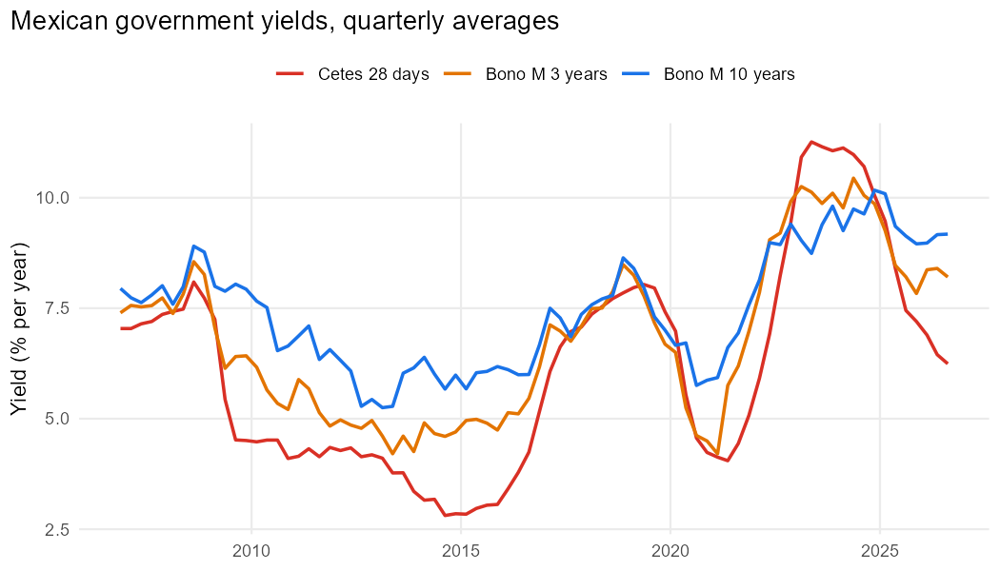
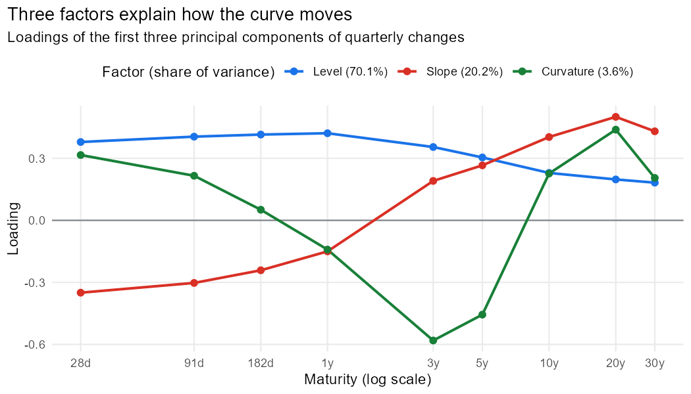
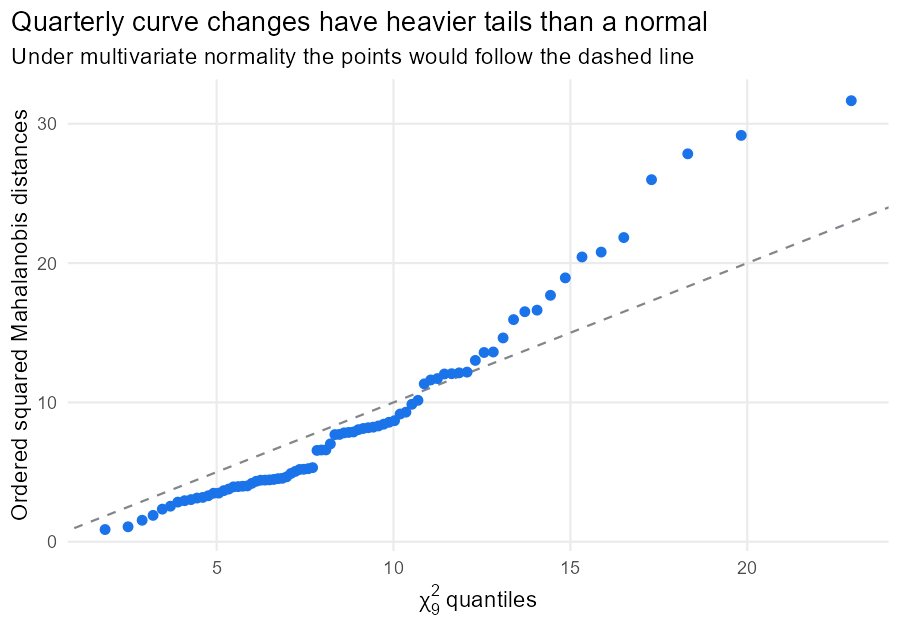
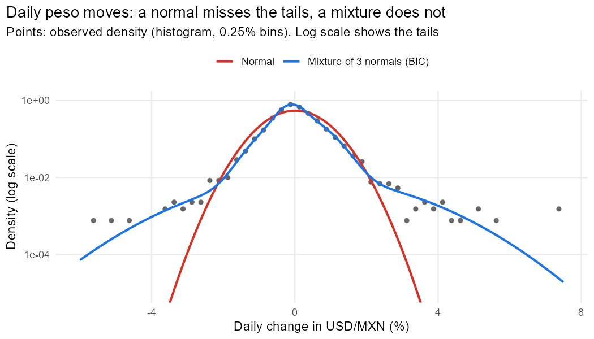
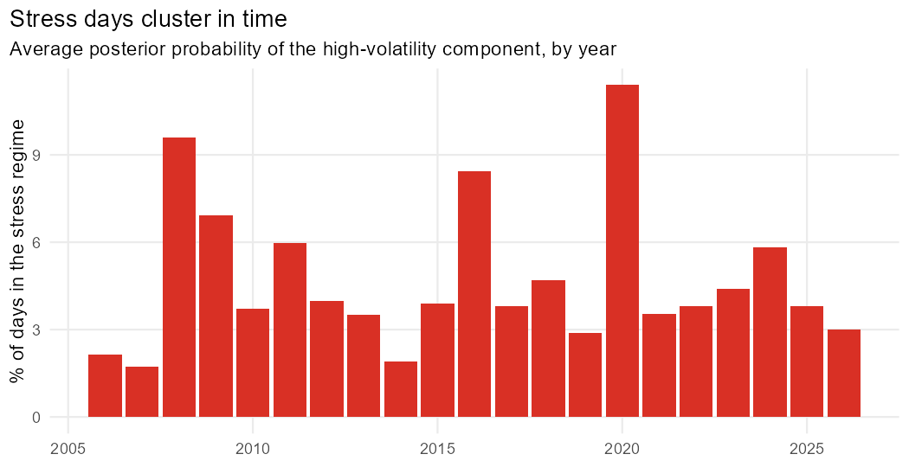
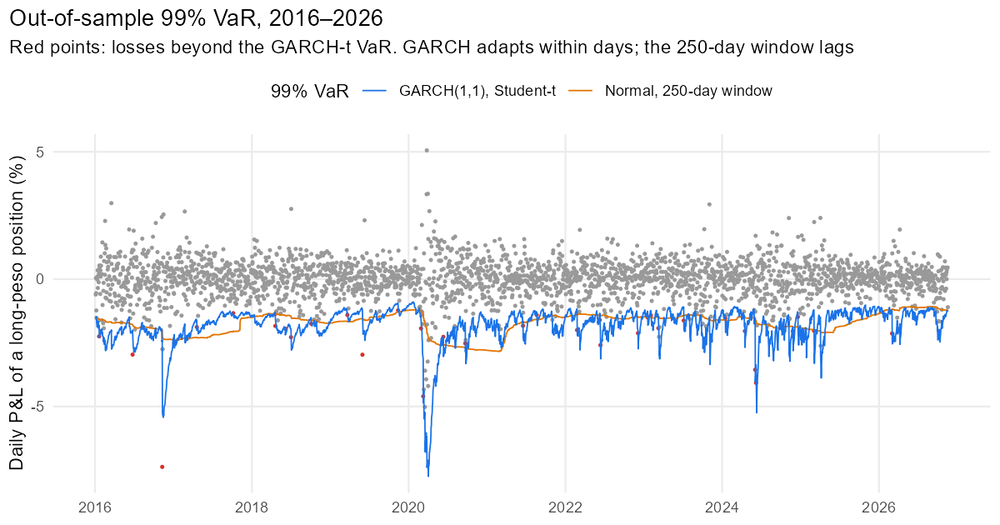
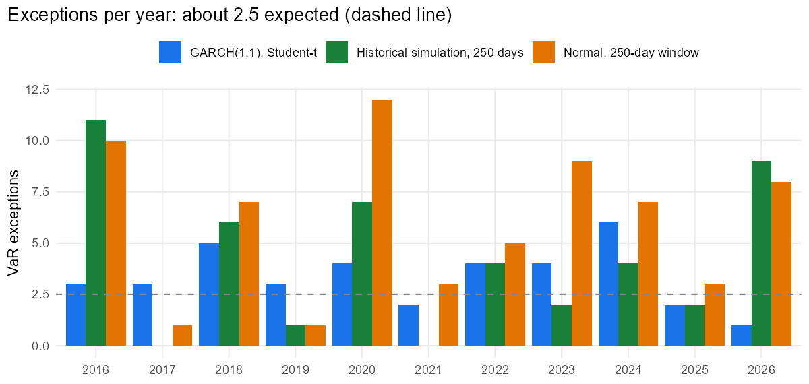

Mexican rates and the peso: factors, regimes and tail risk
What moves the Mexican yield curve, whether its moves are normal, and which Value-at-Risk model survives ten years of out-of-sample backtesting on the peso
November 2026 · R (mclust, MVN, rugarch) · Code · Data: Banco de México, Sistema de Información Económica (SIE)
The data
- Yield curve. Monthly average yields of Mexican government securities at nine maturities: Cetes at 28, 91, 182 and 364 days and fixed-rate Bonos M at 3, 5, 10, 20 and 30 years (SIE series SF4830, SF3338, SF3270, SF3367, SF17990, SF18608, SF30057, SF41841, SF60719), from 2006Q4 (the first quarter with a 30-year bond) to 2026Q3.
- Peso. The daily FIX exchange rate, pesos per US dollar (SIE series SF43718): 5,248 daily changes from 2006-01-03 to 2026-11-18.
Banco de México does not publish a free daily secondary-market curve; those curves come from private price vendors. Long bonds are auctioned every few weeks, so the monthly series have gaps. Quarterly averages fill almost all of them: only 8 of 720 cells are missing, and those are interpolated in time, tenor by tenor.
Data reproduced citing the source, as Banco de México requires.
A. What moves the curve: three factors
Yields ranged from 2.81% to 11.56% over twenty years. To find how the curve moves, I take quarterly changes at the nine maturities, centre them and compute their singular value decomposition \(X = UDV^\top\). The columns of \(V\) are the directions in which the curve moves; \(d_k^2 / \sum_j d_j^2\) is the share of variance each one explains. The SVD of the centred data matrix and the principal components of its covariance matrix are the same thing (the eigenvalues are \(d_k^2/(n-1)\)), which the code checks.

| Factor | Share of variance | What it does |
|---|---|---|
| Level | 70.1% | All yields move in the same direction. Short rates move more (loading 0.38 at 28 days against 0.18 at 30 years), consistent with a curve whose short end follows the policy rate closely. |
| Slope | 20.2% | Short rates and long rates move in opposite directions: the curve steepens or flattens. |
| Curvature | 3.6% | The 3- to 5-year segment moves against both ends. |
This is the classic level–slope–curvature result found in yield curves across countries, here for Mexico. In levels rather than changes, the first factor alone explains 94.8%: yields at all maturities rise and fall together over the cycle.
Why it matters for risk. A portfolio of bonds at many maturities has nine risk drivers, but three numbers describe almost all of its exposure. Stress tests and hedging are built on these factors.
B. Are the moves normal?
Many risk models assume that changes are multivariate normal. Under that assumption, squared Mahalanobis distances of the changes follow a \(\chi^2_9\) distribution.

| Data | Test | Statistic | p-value |
|---|---|---|---|
| 9 tenors | Mardia Skewness | 337.125 | <0.001 |
| 9 tenors | Mardia Kurtosis | 8.844 | <0.001 |
| 9 tenors | Henze-Zirkler | 1.099 | <0.001 |
| 3 factors | Mardia Skewness | 18.987 | 0.04 |
| 3 factors | Mardia Kurtosis | 4.371 | <0.001 |
Normality is rejected by Mardia’s skewness and kurtosis tests and by Henze–Zirkler, both for the nine maturities and for the three factors. 5 of 79 quarters lie beyond the 99% quantile of the \(\chi^2_9\), where about 0.8 would be expected. Caution: with 79 quarters and 9 variables, the asymptotic versions of these tests are approximate, but the plot tells the same story without relying on them.
C. Are there regimes? Gaussian mixtures
A mixture of normal distributions can produce heavy tails: most of the time data come from a calm component and occasionally from a volatile one. Model-based clustering fits mixtures with 1 to 4 components (and several covariance structures) and chooses by BIC, which penalises extra parameters.
On the quarterly curve, BIC chooses a single component (model XXI). With 79 quarters, the data cannot distinguish separate regimes from one distribution with somewhat heavy tails: a second component costs more parameters than it buys in fit. It is a useful negative result: regimes need either more data or a higher frequency.
On the daily peso, BIC chooses 3 components:
| Regime | Share of days | Daily volatility |
|---|---|---|
| Calm | 32.4% | 0.30% |
| Normal | 62.9% | 0.69% |
| Stress | 4.7% | 2.03% |

The stress component covers about 4.7% of days but has a volatility of about 2.0% a day, several times the calm one. It is what produces the tails a single normal cannot.

The years with the most stress days are 2020, 2008 and 2016, the years of the COVID-19 shock, the global financial crisis and the US election of 2016 (the largest one-day depreciation of the peso in the sample, 7.37%, is on 2016-11-09). The dates coincide; the data alone do not prove the causes. Stress days come in clusters, which a mixture of independent draws ignores. That is the job of a GARCH model.
D. Volatility of the peso and Value at Risk
The stylised facts. Daily changes of USD/MXN have a standard deviation of 0.73% and an excess kurtosis of 9.6. Squared changes are strongly autocorrelated (Ljung–Box on squared changes, 10 lags: statistic 2,867; Engle’s ARCH LM test: 1,159, both with p-values that are zero to many decimal places): calm days follow calm days and turbulent days follow turbulent days.
GARCH(1,1). The conditional variance today depends on yesterday’s surprise and yesterday’s variance:
\[ \sigma_t^2 = \omega + \alpha\,\varepsilon_{t-1}^2 + \beta\,\sigma_{t-1}^2 . \]
| Model | Log-likelihood | alpha | beta | Persistence (α+β) | Half-life (days) | t degrees of freedom |
|---|---|---|---|---|---|---|
| GARCH-normal | -4968.4 | 0.112 | 0.880 | 0.992 | 85 | |
| GARCH-t | -4833.7 | 0.109 | 0.880 | 0.990 | 66 | 6.4 |
Persistence of 0.990 means a volatility shock fades slowly: half of it is gone after about 66 trading days. Student-t errors with about 6 degrees of freedom improve the log-likelihood by 135 points: even after modelling the changing volatility, the standardised shocks have heavy tails.
Backtesting the 99% one-day VaR, 2016–2026
Position: an investor long Mexican pesos, who loses when the peso depreciates. Each model forecasts tomorrow’s 1% quantile of the profit and loss using only past data: rolling windows for the normal and historical-simulation models; GARCH refitted every 50 days on the previous 1,500 days. Two tests:
- Kupiec (unconditional coverage): is the share of exceptions 1%?
- Christoffersen (conditional coverage): is it 1% and are exceptions independent, not bunched in crises?
| Model | Exceptions | Expected | Rate | Kupiec p | Christoffersen p |
|---|---|---|---|---|---|
| Normal, 250-day window | 66 | 27 | 2.41% | 3.3e-10 | 3.9e-14 |
| Historical simulation, 250 days | 46 | 27 | 1.68% | 0.0011 | 2e-07 |
| Historical simulation, 500 days | 39 | 27 | 1.43% | 0.036 | 9.3e-05 |
| GARCH(1,1), normal errors | 54 | 27 | 1.97% | 6.2e-06 | 1.1e-05 |
| GARCH(1,1), Student-t errors | 37 | 27 | 1.35% | 0.079 | 0.056 |


- The normal model fails twice: too many exceptions (2.4% instead of 1%) and bunched in turbulent years (10 in 2016 and 12 in 2020). A 250-day window reacts to a crisis months after it starts.
- Historical simulation does better on the count but still fails both tests: it has no notion that volatility changes.
- GARCH with normal errors adapts its volatility within days, but its tails are too thin: 54 exceptions.
- GARCH with Student-t errors is the only model that passes both tests (Kupiec p = 0.08, Christoffersen p = 0.06), with exceptions spread over the years (between 1 and 6 a year). It is still slightly above 1% (1.35%), so a validator would keep it under monitoring.
The lesson. A VaR model needs two ingredients: volatility that changes over time (GARCH) and heavy tails (Student-t). Each alone fails. This is the same distinction as in credit models: one model can be right on average and wrong exactly when it matters.
What a validator would ask
- Quarterly curve data. Averages of auction yields smooth the daily moves, and a few cells are interpolated. A trading desk would use a daily curve from a price vendor.
- Exchange rate only. A full market-risk model would combine the peso with the rate factors of part A in a multivariate model (for example, a multivariate GARCH or a factor copula).
- Regimes. The mixture ignores the order of the days. A Markov-switching model would estimate regimes that persist over time, the natural next step after part C.
- One position, one horizon. Regulatory VaR uses 10-day horizons and Expected Shortfall (Basel’s FRTB uses ES at 97.5%); the same backtesting logic extends to them.
Reproduce it
Rscript run_all.R # about 2 minutesThe processed data are in data/, so the analysis runs without credentials. To refresh them from the SIE API, request a free token from Banco de México and set the environment variable BANXICO_TOKEN (see R/01_get_data.R).
This project also covers three topics of the Multivariate Analysis course I assist at UNAM: the singular value decomposition, the multivariate normal distribution and model-based clustering.
Code: MIT License · Data: Banco de México, Sistema de Información Económica (SIE), banxico.org.mx. Aaron Mauricio Gómez Jiménez · LinkedIn · GitHub